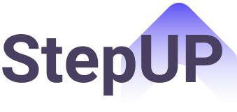

<!DOCTYPE html>
<html lang="pt-br">

<head>
    <meta charset="UTF-8">
    <meta name="viewport" content="width=device-width, initial-scale=1.0">
    <link rel="stylesheet" href="./style.css">
    <link rel="preconnect" href="https://fonts.gstatic.com">
    <link href="https://fonts.googleapis.com/css2?family=Roboto:wght@300&display=swap" rel="stylesheet">
    <title>StepUp</title>
</head>

</html>
<body>
    <main class="container">    <!-- Container com os segmentos do corpo da página a fim de agrupar mais facilmente os elementos -->
        <nav class="navbar">    <!-- Barra de navegação da página  -->
            <div class="logo">
                
            </div>
          
            <ul>
                <li><a href="#speed-hiring">O que é speed hiring?</a></li>
                <li><a href="#vantagens">Vantagens</a></li>
                <li><a href="#prepare">Prepare-se</a></li>
                <li><a href="#objetivo">Nosso objetivo</a></li>
                <li><a href="#parcerias">Parcerias</a></li>
                <li><a class="login" href="#">LOGIN</a></li>
            </ul>
        </nav>

        <section id="home">     <!-- Seção para filtrar cadastros (se para a empresa OU para a candidata) -->
            <h1>Dê o primeiro passo na sua carreira!</h1>
            <div href="#" class="para-mim">

                É para mim
            </div>
            <div href="#" class="para-empresa">
                É para minha empresa
            </div>

            <div class="imagemHome">
                
            </div>
            <div class="bloco">
            </div>

        </section>

        <section id="speed-hiring">     <!-- Seção introdutória sobre o conceito do método de contratação "Speed Hiring" -->
            <div class="blocotxt">
                <div class="linhaverticalSH"></div>
                <div class="screenSH">O que é o Speed Hiring?</div>
                <div class="textoSH">Speed Hiring é um evento de contratação para conectar ex-alunas de escolas parceiras
                    a empresas em busca de talentos.
                    <p>Como acontece na StepUp:</p>
                </div>
            </div>

            <div id="blocotxt-1">
                <div class="numero1">1</div>
                <div class="linhaverticalSH1"></div>
                <div class="passo1">
                    <p>Você se cadastra na nossa plataforma.</p>
                </div>
            </div>

            <div id="blocotxt-2">
                <p class="numero2">2</p>
                <div class="linhaverticalSH2"></div>
                <div class="passo2">
                    <p>A empresas nos mostram o perfil desejado.</p>
                </div>
            </div>

            <div id="blocotxt-3">
                <p class="numero3">3</p>
                <div class="linhaverticalSH3"></div>
                <div class="passo3">
                    <p>Nós fazemos o match e você dá um grande passo a
                        sua carreira!</p>
                </div>
            </div>
        </section>

        <section id="vantagens">    <!-- Seção que elenca as vantagens do Speed Hiring -->
            <div class="linha-vantagens"></div>
            <p class="texto-vantagens">Quais as vantagens desse modelo?</p>

            <div class="candidata">
                <p class="candidata-txt">Candidatas</p>
                <ul class="vantagem-txt"> • Processos curtos e menos burocráticos</ul>
                <ul class="vantagem-txt"> • Feedbacks rápidos, chega de aplicar para uma vaga e esperar semanas por uma
                    resposta</ul>
                <ul class="vantagem-txt"> • Oportunidade de melhorar rapidamente quando receber resposta negativa</ul>
                <ul class="vantagem-txt"> • Chance de impressionar várias empresas em um curto espaço de tempo</ul>
            </div>

            <div class="empresa">
                <p class="empresa-txt">Empresas</p>
                <ul class="vantagem-txt"> • A contratação rápida poupa custos e recursos</ul>
                <ul class="vantagem-txt"> • Acesso a contratações de qualidade superior</ul>
                <ul class="vantagem-txt"> • Taxas de aceitação potencialmente mais altas</ul>
                <ul class="vantagem-txt"> • A rápida tomada de decisão atrai os melhores</ul>
                <ul class="vantagem-txt"> • Os melhores candidatos de diversidade desaparecem rapidamente</ul>
            </div>
        </section>
      
        <div id="blocos">
            <div class="bloco1"></div>
            <div class="bloco2"></div>
            <div class="bloco3"></div>
        </div>
        <section id="objetivo">
            <div class="linha-obj">
                <div class="objetivo-txt">
                    <p>Por que a gente faz o que faz?</p>
                </div>

                <div class="texto-obj">
                    <p>Você já pensou que um dia as mulheres já foram a maioria dos estudantes de 
                        computação? Não?</p>
                        <br>
                    <p>Essa era a realidade presenciada do início da década de 1970 até meados de 1980,
                         quando houve um aumento de 10% para 36% da participação das mulheres entre os 
                         profissionais de computação.
                    </p>
                    <br>
                    <p>A Step up nasceu do desejo de diminuir a disparidade nos números de mulheres e homens nas áreas
                        de tecnologia.</p>
                </div>
        </section>
        <section id="prepare">      <!-- Seção com informações de como se preparar para os eventos realizados pela StepUp -->
            <div class="como-preparar">
                <p>Como se preparar?</p>
                <p>Se você está tendo a oportunidade de participar do evento, saiba que você é uma candidata de excelência.</p>
              <br>
              <p>Estude sua própria jornada e liste como você superou os desafios que teve, como faria diferente agora. Anote suas
                qualidades e defeitos, se pergunte o que você está fazendo para melhorar?</p>
              <br>
              <p>Dê uma lida sobre as informações das empresas que vão participar do evento.</p>
            </div>
        </section>

        <section id="parcerias">       <!-- Seção de parceiras da StepUp -->
            <div class="linha-parcerias"></div>
            <h2>Parcerias</h2>
            <div class="lista-parcerias">
            <ul>
                <li><a href="#"></a></li>
                <li><a href="#"></a></li>
                <li><a href="#"></a></li>
                <li><a href="#"></a></li>
            </ul>
            </div>
        </section>


    <footer class="footer">     <!-- Seção onde constam os meios para realizar contato com StepUp -->
        <div id="rodape">
            <h2>Entre em contato</h2>
            <div class="contatos">
                <div class="contatos1">
                    <p>contato@stepup</p>
                    <p>Tel: 61 99999-9999</p>
                </div>
                <div class="linha-vertical1"></div>
                <div class="contatos2">
                    <p>
                        <div class="instagram">
                            <a href="#"></a>
                            @stepup
                        </div>
                    </p>
                    <p>
                        <div class="twitter">
                            <a href="#"></a>
                            @stepupsh
                        </div>
                    </p>
                </div>
                <div class="linha-vertical2"></div>
                <div class="contatos3">
                    <p>
                        <div class="linkedin">
                            <a href="#"></a>
                            Step Up
                        </div>
                    </p>
                 </div>
        </div>
    </footer>
</body>

</html>